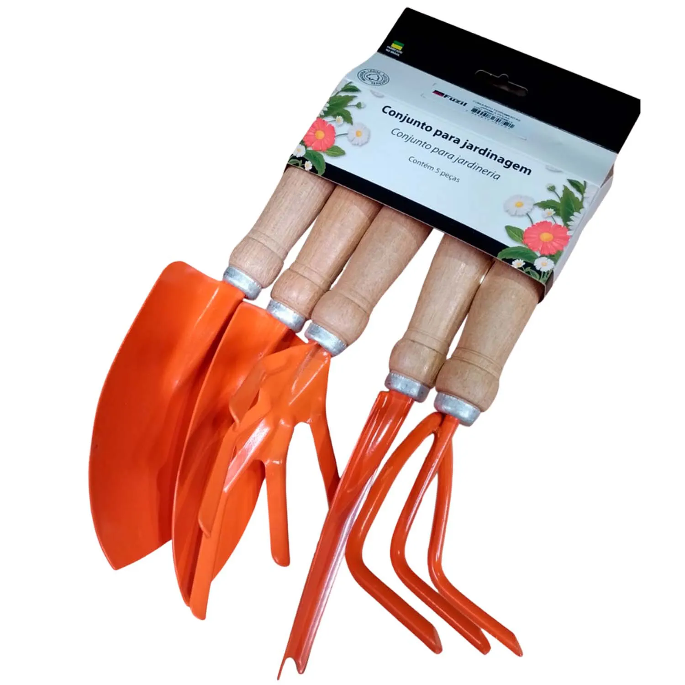
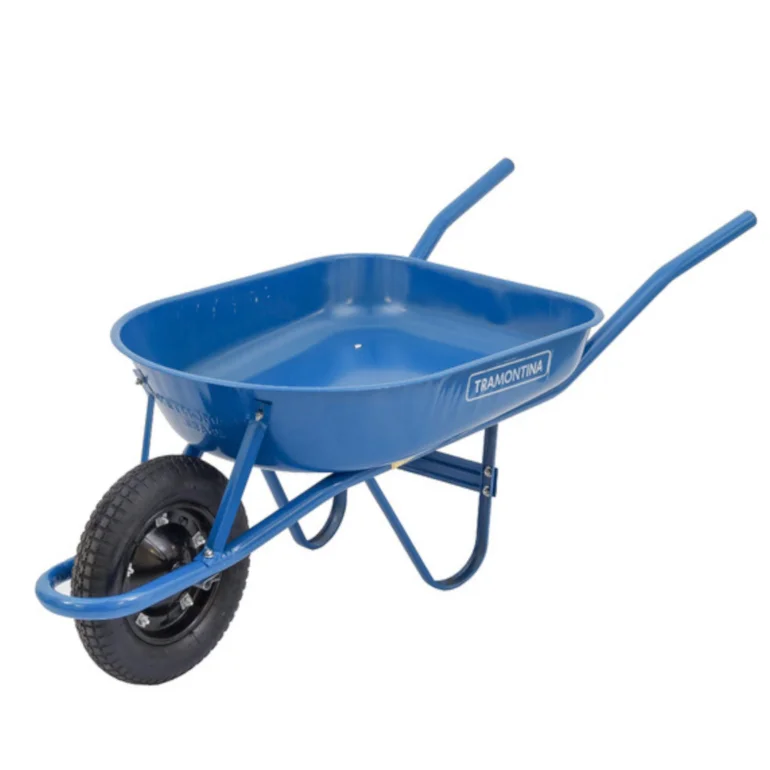

A ração é desenvolvida para oferecer uma alimentação equilibrada e nutritiva aos animais. Ideal para quem busca qualidade e praticidade na alimentação diária.
Preço: R$ 89,90

O adubo orgânico auxilia no desenvolvimento saudável das plantas, contribuindo para melhorar a qualidade do solo e fornecer nutrientes importantes para o cultivo.
Preço: R$ 35,90

O kit de jardinagem contém ferramentas essenciais para cuidar de jardins, vasos e pequenas plantações. Ideal para plantar, podar e organizar suas plantas.
Preço: R$ 79,90

O carrinho de mão é um equipamento prático e resistente, utilizado para transportar terra, adubo, ferramentas e outros materiais. Indicado para atividades agrícolas, jardinagem e serviços em geral.
Preço: R$ 189,90

Trabalhamos com produtos veterinários destinados aos cuidados e à saúde dos animais. Nossa categoria conta com itens para higiene, prevenção e cuidados veterinários, sempre respeitando as orientações de profissionais especializados.
Preço: a partir de R$ 29,90